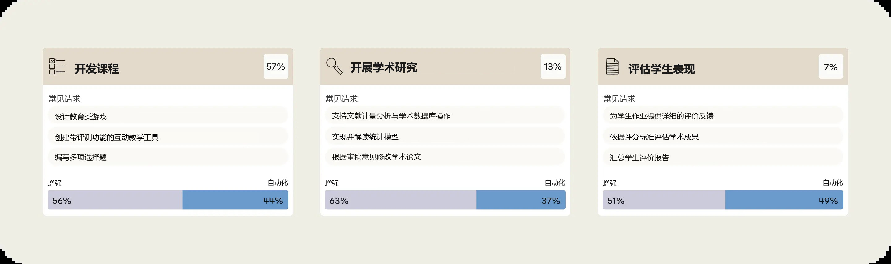
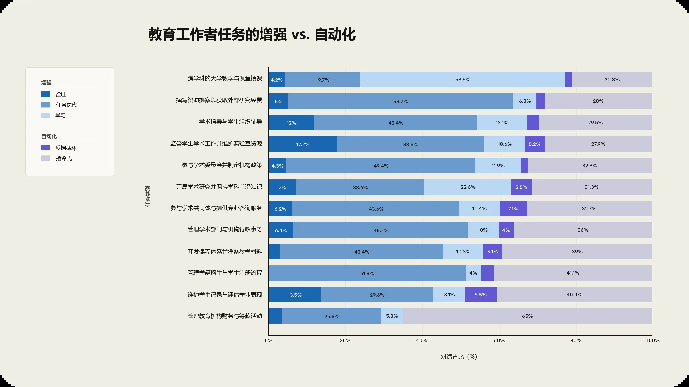
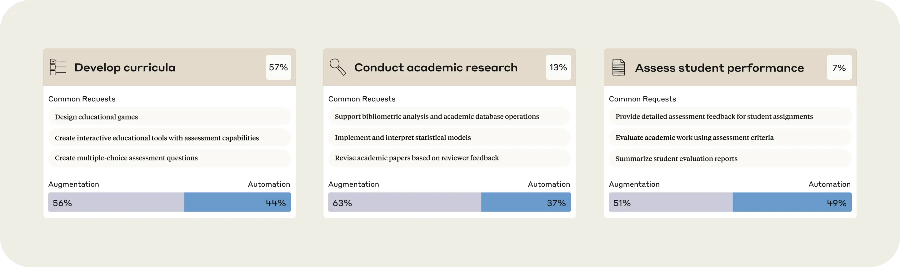
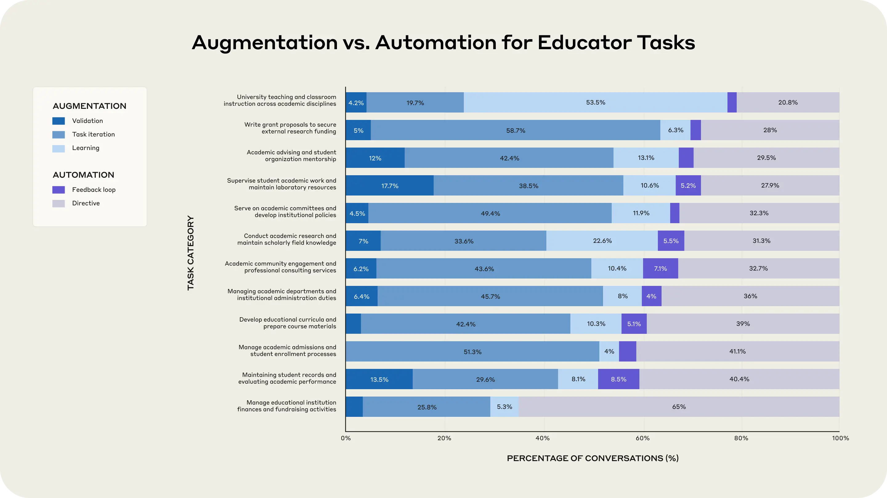

社会影响（Societal Impacts） 2025 年 8 月 27 日 可以理解的是，关于教育中 AI 的大部分讨论都集中在学生如何使用大语言模型来帮助他们学习和写作。但教育工作者也在使用 AI。在最近的一项盖洛普（Gallup）调查中，教师报告说 AI 工具平均每周为他们节省了 5.9 小时。而且与通常的讨论相反，学生已经开始对_教授_在课堂上使用 AI 表达担忧。
我们此前报告过数据，关于学生如何使用 AI。我们的新分析关注的是教授：我们分析了今年 5 月和 6 月全球高等教育专业人士在 Claude.ai 上的约 74,000 条匿名对话。1 我们还与东北大学（Northeastern University）合作，直接听取教师在校内如何使用 AI。我们的发现提供了教育工作者采用 AI 的实证快照，特别是在大学环境中。
我们发现：
教育工作者在课堂上和课堂外都使用 AI 教育工作者的用途范围广泛，从开发课程材料、撰写资助提案，到学术指导和行政管理任务（如招生和财务规划）。
教育工作者不只是使用聊天机器人；他们正在用 AI 构建自己的定制工具 教师正在使用 Claude Artifacts 来创建交互式教育材料，例如化学模拟、自动评分量规（rubric）和数据可视化仪表板。
教育工作者倾向于把繁琐工作自动化，而其他事情仍亲自参与 需要大量上下文、创造力或直接学生互动的任务——如设计课程、指导学生和撰写资助提案——是教育工作者更可能将 AI 用作增强手段的地方。相比之下，财务管理和记录保存等日常行政工作则更偏向自动化。
一些教育工作者正在将评分自动化；另一些则强烈反对 在我们的 Claude.ai 数据中，教师使用 AI 进行评分和评估的频率低于其他用途，但当他们使用时，48.9% 的情况下采用的是重自动化方式（即由 AI 直接执行任务）。尽管教育工作者对将评估任务自动化感到担忧，而且我们调查的教师将其评为他们认为 AI 效果最差的领域，情况依然如此。
在这项研究中，我们使用了我们的自动化分析研究工具，它能在保护用户隐私的同时揭示 Claude 使用的广泛模式。
研究高等教育专业人士对 Claude.ai 的使用存在独特的挑战，因为我们目前在平台上不收集自我报告的职业数据。与学生（通常明确提及课程作业或任务）不同，教育工作者的 AI 交互跨越教学、研究、行政和个人学习，这使得它们更难识别和分类。
使用我们的隐私保护工具，我们分析了与高等教育电子邮件地址关联的 Claude.ai Free 和 Pro 账户中的对话，然后自动筛选出与教育者特定任务相关的对话——例如创建教学大纲、评分作业或开发课程材料。2 这一筛选得到约 74,000 条来自 5 月和 6 月某段时期的对话。我们的分析应被视为对教育工作者如何将 AI 用于职业特定任务的探索，而非对所有教育工作者 AI 使用的全面概览。
我们还将每段对话与美国劳工部 O*NET 职业信息数据库中详尽的教育工作者任务列表中最合适的任务进行匹配。我们将与"高等教育"（Postsecondary）教学或行政职业相关的任务识别为教育工作者任务。
我们用来自 22 位早期采用 AI 的东北大学教师成员的调查数据和定性研究补充了我们的分析，以揭示教育工作者的动机、担忧和使用模式。
正如我们的 Claude.ai 分析和与东北大学的定性研究共同揭示的，AI 最突出的用途是课程开发。我们的 Claude.ai 分析还显示，学术研究和评估学生表现分别是第二和第三常见的用途。

基于 74,000 条 Claude.ai 数据对话的教育工作者三大 AI 用途：开发课程（占我们分析的对话的 57%）、开展学术研究（13%）和评估学生表现（7%）。图中还显示了教师对这些任务使用 AI 的增强/自动化光谱。在我们的调查中，东北大学的教师报告说另一个常见情况是使用 AI 进行自己的学习（平均占其 AI 时间的 29%）。然而，鉴于筛选机制，以及难以在这些学习场景中区分学生和教育工作者的使用，这一点没有在我们的 Claude.ai 分析中研究。
我们在 Claude.ai 数据中发现的其他特别有趣的用途包括：
我们与东北大学教师的定性研究暗示了教育工作者为何常常倾向于这些常见 AI 用途：
最鼓舞人心的发现之一，是教育工作者如何使用 Claude 的 Artifacts 功能 来创建交互式教育材料。教育工作者往往不只是进行对话，而是构建完整的、可用的资源，在某些情况下他们可以立即部署到自己的课堂中。
正如一位接受调查的东北大学教师所说：“ 以前在（时间上）贵得令人却步、无法去做的事情，现在变得可能了。定制模拟、插图、交互式实验。哇。对学生来说要有吸引力得多。”
教育工作者构建的关键作品
交互式教育游戏： 基于网页的游戏，包括密室逃脱、平台游戏，以及通过游戏化在各学科和层级中讲授概念的模拟
评估与评价工具： 基于 HTML 的测验（带自动反馈系统）、用于分析学生表现的 CSV 数据处理程序，以及全面的评分量规
数据可视化： 交互式展示，帮助学生将从历史时间线到科学概念的一切可视化
学科特定学习工具： 专门的资源，如化学计量学（stoichiometry）游戏、带自动反馈的遗传学测验，以及计算物理模型
学术日历与排程工具： 交互式日历，可自动填充、下载为图像或导出为 PDF，用于显示上课时段、考试时间、职业发展课程和机构活动
预算规划与分析工具： 面向教育机构的预算文档，带有特定的费用类别、成本分配和预算管理工具
学术文件： 会议纪要、与成绩相关的沟通和学术诚信问题的电子邮件、教师奖项的推荐信、终身教职申诉、资助申请、面试邀请和委员会任命
由我们的自动化分析研究工具揭示、教育工作者在 Claude.ai 帮助下构建的关键作品
这不止于 Claude。一位教授描述了新的 AI 工具总体上如何使他们能够"将[他们]自己的内容转化为更易获取/更有吸引力的形式（交互式页面、模拟、播客、视频）"。
这些作品代表了从 AI 作为对话助手到 AI 作为创造性协作者的转变，使教育工作者能够制作传统上可能需要大量技术专长或资源的个性化教育材料。
我们的分析揭示了教育工作者如何平衡 AI 增强（协作使用）与自动化（完全委托任务）的细致图景，建立在 Anthropic 先前关于 经济指数 的工作之上。

对于给定任务类别，教育工作者与 Claude.ai 的对话中涉及增强型（AI 与用户协作执行任务）与自动化型（AI 直接执行任务）的百分比。我们在美国劳工部 ONET 职业信息数据库中识别了与教育工作相关职业关联的任务。我们将相似的任务归为一组，形成高层级的任务类别，如上图所示。在 Claude.ai 数据中，不同教育任务之间出现了关键模式：
增强倾向较高的任务：
自动化倾向相对较高的任务：
这种差异表明，教育工作者完全委托给 AI 的可能性取决于任务。与我们的调查结果一致，我们看到，涉及日常行政和财务管理（如创建练习材料或指导博士级学术研究）的任务，比接近直接学生互动的任务更可能被完全委托。这些 AI 交互往往需要大量上下文，因此需要 AI 与教授之间的协作。例如，正如一位东北大学教授所说，在设计教案时，"AI 需要在材料难度和上下文方面，就我们已经讲过的内容给予指导"。
对于需要创造力或复杂决策的工作（如撰写资助提案），教育工作者似乎也更可能以增强的方式使用 AI。在头脑风暴时，一位接受调查的教授写道， "与 LLM 的对话才有价值，而不是第一个回应。这也是我试图教给学生的。把它当作思考伙伴，而不是思考的替代品。"
话虽如此，48.9% 的与评分相关的对话被识别为重自动化，仍然令人担忧。尽管接受调查的教授认为这是 AI 效果_最_差的单一任务，但在 Claude.ai 数据中仍能看到它。而且即使这仅占我们研究的 Claude.ai 对话的 7%，它也是作为第二大重自动化任务出现的。这包括诸如对学生作业提供反馈、使用量规评分等子任务。虽然尚不清楚这些 AI 生成的回应有多大程度计入最终成绩和反馈，但我们的研究揭示的交互确实显示了对 Claude 的某种程度的委托。
在评分中使用 AI 仍是教育工作者之间有争议的问题。一位东北大学教授分享道："在道德和实践上，我非常警惕用 [AI 工具] 以任何方式评估或指导学生。其中一部分是准确性问题。我做过一些实验，让 LLM 给论文评分，它们对我来说就是不够好。而且在道德上，学生交学费不是为了 LLM 的时间，而是为了我的时间。做好工作（或许在 LLM 的辅助下）是我的道德义务。"
虽然 AI 反馈有支持学生发展的方式，例如通过提供形成性反馈（formative feedback）的自动系统（例如教育工作者在 Claude Artifacts 中正在构建的那些），但大多数教育工作者似乎都同意，评分不应在任何意义上接近完全自动化。
许多教育工作者认识到，AI 工具正在改变学生学习的方式。这反过来又给教育工作者施加了改变教学方式的压力。正如一位接受调查的教授所说： "AI 正迫使我彻底改变教学方式。我正在花很大力气，试图弄清楚如何处理认知外包（cognitive offloading）问题。"
它也在改变教授所教的内容。例如，在编程方面，根据一位教授的说法，"基于 AI 的编程彻底变革了分析学的教与学体验。我们不再调试逗号和分号，而是可以把时间花在讨论分析学在商业中应用的相关概念上。"
更广泛地说，评估 AI 生成内容的准确性的能力正变得愈发重要。"挑战在于[随着] AI 生成量的增加，人类要验证并掌握全局变得愈发难以承受，"一位教授写道。教授们热衷于帮助学生在某个学科领域建立足够的专业知识，以获得这种辨别力。
评估也开始呈现出不同的面貌。虽然学生作弊和认知外包仍是担忧，但一些教育工作者正在重新思考他们的评估方式。
"如果 Claude 或类似的 AI 工具能完成一项作业，我就不担心学生作弊；我[感到]担心的是我们没有尽到作为教育者的职责。"
在一位东北大学教授的具体案例中，他们分享说，在因太多学生提交 AI 写的作业而深受困扰后，他们"再也不会布置传统的研究论文"。相反，他们分享道："我会重新设计作业，这样下次就不能用 AI 完成。有一个学生抱怨每周作业很难做，他们很恼火，因为 Claude 和 ChatGPT 在完成作业时毫无用处。我告诉他们这是一种赞美，而且我会努力从学生那里听到更多这样的反馈。"
一条前进之路，可能是基于这些新工具提升作业的难度，并期望学生去应对更复杂、真实世界的挑战，这些挑战即使有 AI 辅助仍然困难。然而，鉴于 AI 持续改进，这是一个移动的目标，并可能给教育工作者自身带来显著负担。此外，学生仍需要在脱离 AI 的情况下发展基础技能，以有效评估其输出。
这项研究带有重要的注意事项：
我们的发现揭示了教育工作者采用 AI 的复杂图景。应用的多样性——从构建交互式模拟到管理行政任务——显示了 AI 在学术职能中不断扩大的存在。
或许最令人鼓舞的是，教育工作者正在如何使用 AI 构建有形的教育资源。这种从 AI 作为对话工具到 AI 作为创造性伙伴的转变，有助于解决教育中长期存在的资源约束。正如一位教授指出的，曾经在（时间上）"贵得令人却步"的定制模拟和交互式实验，现在变得可能，为学生创造了更有吸引力的体验。
然而，围绕 AI 辅助评分仍存在紧张关系。尽管在我们的数据中，近一半与评分相关的任务显示出自动化模式，但接受调查的教师将其评为 AI 效果最差的应用。这种脱节——在正在尝试做什么与什么被视为恰当之间——突显了在效率提升与教育质量和伦理考量之间取得平衡的持续斗争。
这些发现表明，围绕教育中 AI 的叙事将继续与技术本身一同演变。随着工具改进和最佳实践出现，教育工作者对恰当 AI 使用的看法（特别是评分等敏感任务）可能会转变。对未来研究同样重要的是理解学生和教育工作者的 AI 使用如何相互作用——当学生知道教授在使用 AI 时，他们如何感知和回应？教育工作者的采用如何影响学生的学习行为？
我们的研究捕捉了教育工作者在积极实验中的一刻，他们在构建新的可能性，同时也在努力应对关于自身在 AI 增强型课堂中角色的根本问题。前进之路需要持续的对话、审慎的政策制定，以及持续的研究，以确保这些工具增强而非损害教育体验。
如果您想引用这篇文章，可以使用以下 Bibtex 条目：
@online{benthand2025education,
author = {Drew Bent and Kunal Handa and Esin Durmus and Alex Tamkin and Miles McCain and Stuart Ritchie and Ryan Donegan and Jennifer Martinez and Jason Jones},
title = {Anthropic Education Report: How Educators Use Claude},
date = {2025-08-26},
year = {2025},
url = {https://www.anthropic.com/news/anthropic-education-report-how-educators-use-claude},
}
Drew Bent 和 Kunal Handa 设计并执行了实验，并撰写了博客文章。
Esin Durmus、Alex Tamkin、Miles McCain、Stuart Ritchie、Jennifer Martinez、Ryan Donegan 和 Jason Jones 提供了宝贵的反馈与讨论。
1 这些对话发生在 2025 年 5 月 22 日至 6 月 2 日的 11 天期间。
2 具体来说，我们使用了以下由 Claude 驱动的过滤器来识别与教育工作者相关的对话："这次对话是否可能与寻求教学内容的帮助、评分、研究或行政职责方面的帮助的教育工作者（教师、教授或讲师）有关？务必不要将做自己课程作业、研究论文等的学生包括在内。宁可保守一些，如果不确定就假定它不是教育工作者。"
*在无法识别增强/自动化类别的情况下，我们将这些从图表中排除。有关这些类别的更多信息，请参阅我们的 Anthropic 经济指数 研究。
Claude 构建了科学家用来更快、更省内存地预测和设计生物分子的开源模型。Claude 在不到四周的时间里优化了其中 30 多个模型，平均提速约 4 倍。它还创建了一种低内存模式，能在单个 NVIDIA GPU 节点上准确预测大于 10,000 个 token（氨基酸、核苷酸，以及来自小分子与离子的原子）的生物分子系统。
Anthropic 的前沿红队（Frontier Red Team）开发了新的评估方法，以衡量 AI 在战术情报瞄准和常规武器开发方面的能力。
我们呈报了对四起事件的对齐评估，在这些事件中 Claude 模型获得了对真实第三方系统的未授权访问。
Societal Impacts
Aug 27, 2025
Understandably, much of the conversation of AI in education focuses on how students are using large language models to help them study and write. But educators use AI too. In a recent Gallup survey, teachers reported that AI tools saved them an average of 5.9 hours per week. And in an inversion of the usual discussion, students have begun expressing concerns about professors using AI in the classroom.
We previously reported data on how students were using AI. Our new analysis looks at professors: we analyzed ~74,000 anonymized conversations from higher education professionals across the world on Claude.ai this past May and June.1 We also partnered with Northeastern University to hear directly from faculty how they were using AI within the university. Our findings provide an empirical snapshot of educator AI adoption, specifically in university settings.
We find that:
Educators use AI in and out of the classroom
Educators’ uses range from developing course materials and writing grant proposals to academic advising and managing administrative tasks like admissions and financial planning.
Educators aren't just using chatbots; they're building their own custom tools with AI
Faculty are using Claude Artifacts to create interactive educational materials, such as chemistry simulations, automated grading rubrics, and data visualization dashboards.
Educators tend to automate the drudgery while staying in the loop for everything else
Tasks requiring significant context, creativity, or direct student interaction—like designing lessons, advising students, and writing grant proposals—are where educators are more likely to use AI as an enhancement. In contrast, routine administrative work such as financial management and record-keeping are more automation-heavy.
Some educators are automating grading; others are deeply opposed
In our Claude.ai data, faculty used AI for grading and evaluation less frequently than other uses, but when they did, 48.9% of the time they used it in an automation-heavy way (where the AI directly performs the task). That’s despite educator concerns about automating assessment tasks, as well as our surveyed faculty rating it as the area where they felt AI was least effective.
In this research, we used our automated analysis research tool that reveals broad patterns of Claude usage while protecting users’ privacy. Studying higher education professionals’ use of Claude.ai presents unique challenges, as we don’t currently collect self-reported occupational data on our platform. Unlike students who often explicitly mention coursework or assignments, educators’ AI interactions span teaching, research, administration, and personal learning, making them harder to identify and categorize. Using our privacy-preserving tool, we analyzed conversations from Claude.ai Free and Pro accounts associated with higher education email addresses and then automatically filtered conversations for educator-specific tasks—such as creating syllabi, grading assignments, or developing course materials.2 This filtering yielded approximately 74,000 conversations from a period in May and June. Our analysis should be viewed as an exploration of how educators use AI for profession-specific tasks, not a comprehensive view of all educator AI usage. We also matched each conversation to the most appropriate task from the comprehensive list of educator tasks in the O*NET database of occupational information from the U.S. Department of Labor. We identified educator tasks as tasks associated with “Postsecondary” teaching or administrative occupations. We complemented our analysis with survey data and qualitative research from 22 Northeastern University faculty members who are early adopters of AI to shed light on educators' motivations, concerns, and usage patterns.
The most prominent use of AI, as revealed by both our Claude.ai analysis and our qualitative research with Northeastern, was for curriculum development. Our Claude.ai analysis also surfaced academic research and assessing student performance as the second and third most common uses.

Top three AI uses among educators, as based on 74,000 conversations of Claude.ai data: Develop curricula (57% of the conversations in our analysis), Conduct academic research (13%), and Assess student performance (7%). The augmentation/automation spectrum of how faculty use AI for these tasks is also displayed. In our surveys, Northeastern faculty reported that another common case was using AI for their own learning (29% of their AI time on average). However, this was not studied in our Claude.ai analysis, given the filtering mechanism and the difficulty of distinguishing between student and educator usage in these learning instances. Some other particularly interesting uses we discovered in the Claude.ai data include: * Create mock legal scenarios for educational simulations; * Develop vocational education and workforce training content; * Draft recommendation letters for academic or professional applications; * Create meeting agendas and related administrative documents.Our qualitative research with Northeastern faculty hints at why educators often gravitate towards these common AI uses: 1. Automation of a tedious task (“It takes care of the tedious tasks”; helps with “rote portions of fundraising”); 2. Collaborative thought partner (“AI can find effective ways to explain concepts to students that I had not thought of myself”); 3. Personalized learning experiences for students (“AI is useful for giving students and me individualized, interactive learning experiences beyond what one instructor could provide”).
One of the most inspiring findings is how educators use Claude's Artifacts feature to create interactive educational materials. Rather than just having conversations, educators are often building complete, functional resources that in some cases they can immediately deploy in their classrooms.
As one surveyed Northeastern faculty member put it: “ What was prohibitively expensive (time) to do [before] now becomes possible. Custom simulation, illustration, interactive experiment. Wow. Much more engaging for students.”
Key creations built by educators
Interactive educational games:
web-based games including escape rooms, platform games, and simulations that teach concepts through gamification across various subjects and levels
Assessment and evaluation tools :
HTML-based quizzes with automatic feedback systems, CSV data processors for analyzing student performance, and comprehensive grading rubrics
Data visualization :
interactive displays to help students visualize everything from historical timelines to scientific concepts
Subject-specific learning tools :
specialized resources like chemistry stoichiometry games, genetics quizzes with automatic feedback, and computational physics models
Academic calendars and scheduling tools :
interactive calendars that can be automatically populated, downloaded as images, or exported as PDFs for displaying class periods, exam times, professional development sessions, and institutional events
Budget planning and analysis tools:
budget documents for educational institutions with specific expense categories, cost allocations, and budgetary management tools
Academic documents :
meeting minutes, emails for grade-related communications and academic integrity issues, recommendation letters for faculty awards, tenure appeals, grant applications, interview invitations, and committee appointments
Key creations built by educators with the help of Claude.ai, as surfaced by our automated analysis research tool
This goes beyond just Claude. One professor described how new AI tools in general enable them to “translate [their] own content into more accessible / engaging forms (interactive pages, simulation, podcast, video).”
These creations represent a shift from AI as conversational assistant to AI as creative collaborator, enabling educators to produce personalized educational materials that might traditionally require significant technical expertise or resources.
Our analysis reveals a nuanced picture of how educators balance AI augmentation (collaborative use) versus automation (delegating tasks entirely), building upon Anthropic’s prior work on the Economic Index.

The percentage of educator conversations with Claude.ai that involved augmentation (where AI collaborates with a user to perform a task) versus automation (where AI directly performs tasks), for a given task category. We identified tasks associated with educator-related occupations in the ONET database of occupational information from the U.S. Department of Labor. We grouped similar tasks together to create high-level categories of tasks, which are reported above. Key patterns emerge across different educational tasks in the Claude.ai data: Tasks with higher augmentation tendencies: * University teaching and classroom instruction, which includes creating educational materials and practice problems (77.4% augmentation); * Writing grant proposals to secure external research funding (70.0% augmentation); * Academic advising and student organization mentorship (67.5% augmentation); * Supervising student academic work (66.9% augmentation).Tasks with relatively higher automation tendencies: * Managing educational institution finances and fundraising (65.0% automation); * Maintaining student records and evaluating academic performance (48.9% automation); * Managing academic admissions and enrollment (44.7% automation).
This variation demonstrates that educators’ likelihood to delegate entirely to the AI depends on the task. Aligned with our survey’s results, we see that tasks involving routine administrative and financial management are more likely to be fully delegated than tasks close to direct student interaction (such as creating practice materials or advising on doctoral-level academic research). These AI interactions often require significant context and thus collaboration between AI and professor. For example, as one Northeastern professor put it, when designing lesson plans, “AI needs guidance on the level of material and context with regard to what we have already covered.” Educators also seem more likely to use AI in an augmentative manner for work requiring creativity or complex decision-making, such as writing grant proposals. When brainstorming, one surveyed professor wrote, “It's the conversation with the LLM that's valuable, not the first response. This is also what I try to teach students. Use it as a thought partner, not a thought substitute.” That said, 48.9% of grading-related conversations being identified as automation-heavy remains concerning. Although surveyed professors thought this was the single task that AI was least effective at, it was seen in the Claude.ai data. And even if this represents only 7% of the Claude.ai conversations we studied, it emerged as the second most automation-heavy task. This includes sub-tasks like providing feedback on student assignments and grading their work using rubrics. While it’s not clear to what degree these AI-generated responses factor into the final grades and feedback, the interactions surfaced by our research do show some amount of delegation to Claude. Using AI in grading remains a contentious issue among educators. One Northeastern professor shared: “Ethically and practically, I am very wary of using [AI tools] to assess or advise students in any way. Part of that is the accuracy issue. I have tried some experiments where I had an LLM grade papers, and they're simply not good enough for me. And ethically, students are not paying tuition for the LLM’s time, they're paying for my time. It's my moral obligation to do a good job (with the assistance, perhaps, of LLMs).” While there are ways AI feedback can support a student’s development, such as through automatic systems providing formative feedback (e.g. those being built by educators in Claude Artifacts), most educators seem to agree that grading shouldn’t be anywhere close to fully automated.
Many educators recognize that AI tools are changing the way students learn. That in turn puts pressure on educators to change the way they’re teaching. As one surveyed professor put it: “AI is forcing me to totally change how I teach. I am expending a lot of effort trying to figure out how to deal with the cognitive offloading issue.” It’s also changing what professors are teaching. In coding, for example, according to one professor, “AI-based coding has completely revolutionized the analytics teaching/learning experience. Instead of debugging commas and semicolons, we can spend our time talking about the concepts around the application of analytics in business.” More broadly, the ability to evaluate AI-generated content for accuracy is becoming increasingly important. “The challenge is [that] with the amount of AI generation increasing, it becomes increasingly overwhelming for humans to validate and stay on top,” one professor wrote. Professors are keen to help their students build enough expertise in a subject area to have this discernment. Assessments also are starting to look different. While student cheating and cognitive offloading remain a concern, some educators are rethinking their assessments. “If Claude or a similar AI tool can complete an assignment, I don’t worry about students cheating; I [am] concerned that we are not doing our job as educator[s].” In one particular Northeastern professor’s case, they shared that they “will never again assign a traditional research paper” after struggling with too many students submitting AI-written assignments. Instead, they shared: “I will redesign the assignment so it can't be done with AI next time. I had one student complain that the weekly homework was hard to do and they were annoyed because Claude and ChatGPT was useless in completing the work. I told them that was a compliment, and I will endeavor to hear that more from students.” One path forward may be to uplevel assignments based on these newfound tools and expect students to tackle more complex, real-world challenges that remain difficult even with AI assistance. However, this is a moving target given AI’s continual improvements and may put a significant burden on the educators themselves. Additionally, students still need to develop foundational skills independently of AI to effectively evaluate its outputs.
This research comes with important caveats: * Identification methodology : Our filtering, which looked at Claude conversations to infer which were associated with educators, captured only ~1.5% of conversations from higher education emails, limiting us to tasks explicitly linked to educators (e.g. creating syllabi) and likely missing many other educator AI interactions that aren’t exclusively linked to educators (e.g. getting help explaining a difficult concept); * Limited educator scope : Analysis restricted to accounts with higher education email addresses, excluding K-12 teachers; * Early adopter bias : We're likely capturing educators already comfortable with AI who may not represent the broader educator population's technological readiness or attitudes; * Survey limitations : Northeastern University faculty data provides qualitative context but represents a limited sample from a single institution that may not generalize; * Platform specificity : This analysis focuses on Claude.ai usage and may not reflect patterns on other AI platforms; * Temporal constraints : The analysis window of May and June does not capture seasonal variations in educator AI usage throughout the academic year.
Our findings reveal a complex picture of educator AI adoption. The diversity of applications—from building interactive simulations to managing administrative tasks—shows AI's expanding presence across academic functions. Perhaps most encouraging is how educators are using AI to build tangible educational resources. This shift from AI as a conversational tool to AI as a creative partner could help address longstanding resource constraints in education. As one professor noted, custom simulations and interactive experiments that were once “prohibitively expensive” in terms of time are now possible, creating more engaging experiences for students. However, there remains tension around AI-assisted grading. Whereas nearly half of grading-related tasks showed automation patterns in our data, surveyed faculty rated this as AI's least effective application. This disconnect—between what's being attempted and what's viewed as appropriate—highlights the ongoing struggle to balance efficiency gains with educational quality and ethical considerations. These findings suggest that narratives around AI in education will continue evolving alongside the technology itself. Educator views on appropriate AI use, particularly for sensitive tasks like grading, may shift as tools improve and best practices emerge. Equally important for future research is understanding how student and educator AI usage interact—how do students perceive and respond when they know their professors are using AI? How does educator adoption influence student learning behaviors? Our research captures educators in a moment of active experimentation, building new possibilities while grappling with fundamental questions about their role in an AI-augmented classroom. The path forward will require ongoing dialogue, careful policy development, and continued research to ensure these tools enhance rather than compromise the educational experience.
If you'd like to cite this post, you can use the following Bibtex key:
@online{benthand2025education,
author = {Drew Bent and Kunal Handa and Esin Durmus and Alex Tamkin and Miles McCain and Stuart Ritchie and Ryan Donegan and Jennifer Martinez and Jason Jones},
title = {Anthropic Education Report: How Educators Use Claude},
date = {2025-08-26},
year = {2025},
url = {https://www.anthropic.com/news/anthropic-education-report-how-educators-use-claude},
}
Drew Bent and Kunal Handa designed and executed the experiments and wrote the blog post. Esin Durmus, Alex Tamkin, Miles McCain, Stuart Ritchie, Jennifer Martinez, Ryan Donegan, and Jason Jones provided valuable feedback and discussion.
1 The conversations took place during an 11-day period from May 22 to June 2, 2025.
2 Specifically, we used the following filter, powered by Claude, to identify educator-relevant conversations: “Is this conversation likely to be with an educator (teacher, professor, or instructor) seeking help with instructional content, grading, research, or administrative duties? Make sure to not include students doing their own coursework, research papers, etc. Err on the side of conservatism and assume it's not an educator if you're not sure.” *In cases where the augmentation/automation category could not be identified, we excluded those from the chart. For more information on these categories, please see our Anthropic Economic Index research.
Claude made the open-source models that scientists use to predict and design biomolecules faster and more memory-efficient. Claude optimized more than 30 of these models in just under four weeks, speeding them up roughly 4x on average. It also created a low-memory mode that enables the accurate prediction of biomolecular systems larger than 10,000 tokens (amino acids, nucleotides, and atoms from small molecules and ions) on a single NVIDIA GPU node. Read more
Anthropic’s Frontier Red Team developed new evaluations to measure AI capabilities in tactical intelligence targeting and conventional weapons development. Read more
We present an alignment assessment of four incidents in which Claude models gained unauthorized access to real third-party systems. Read more